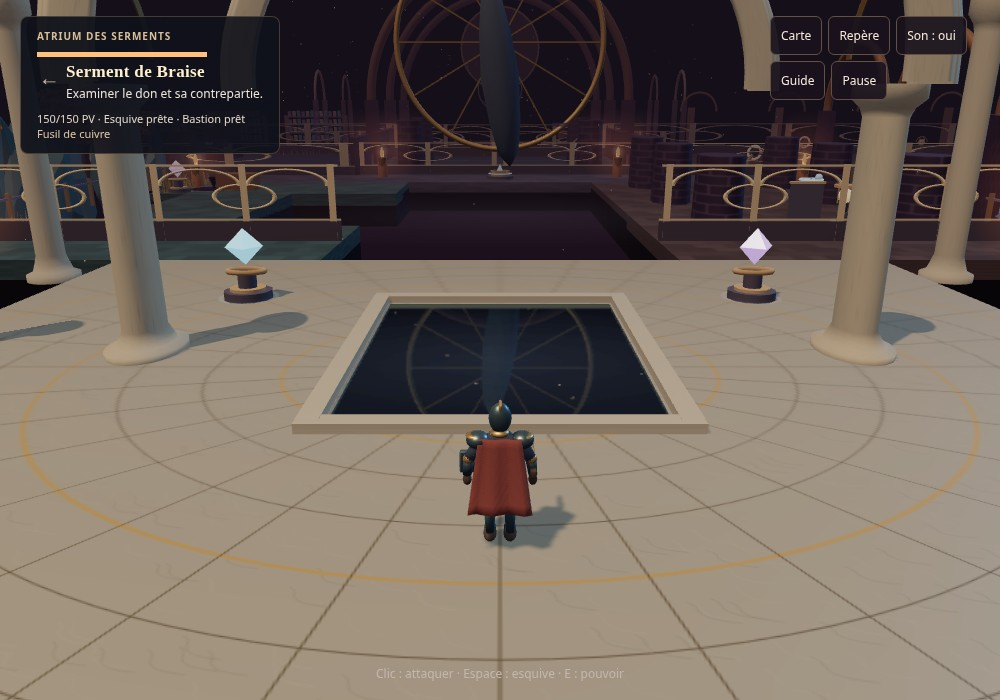
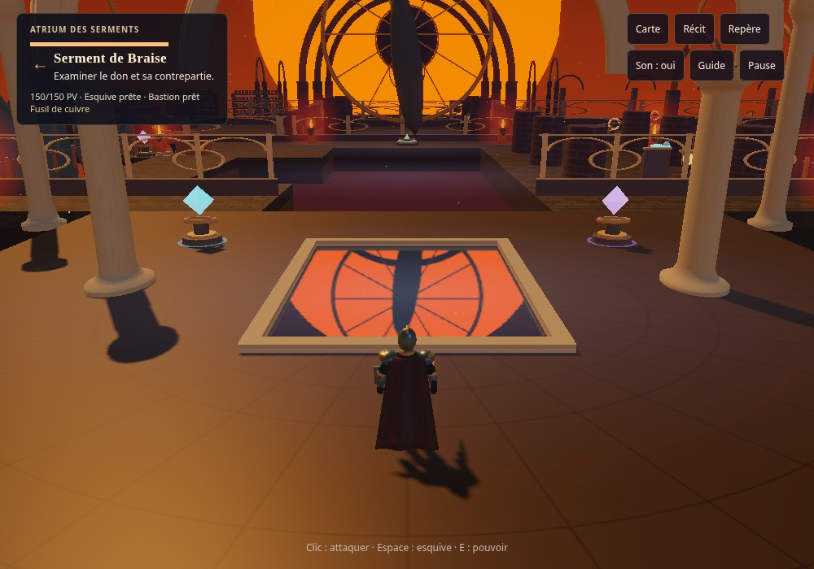
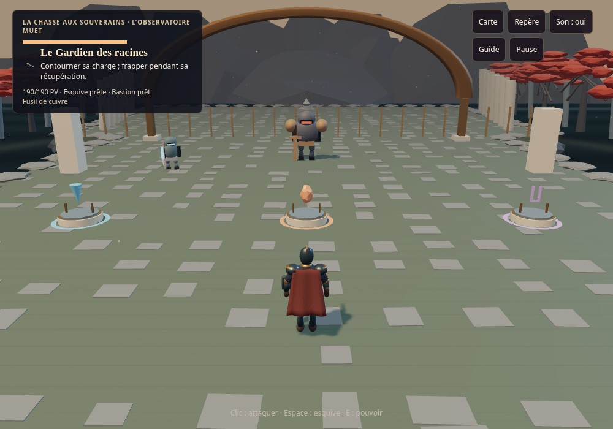
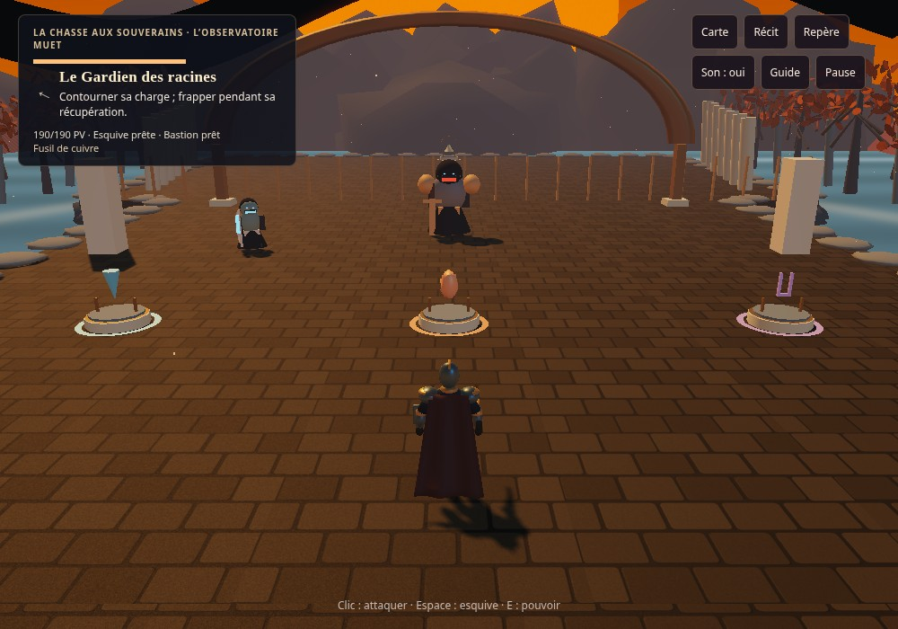
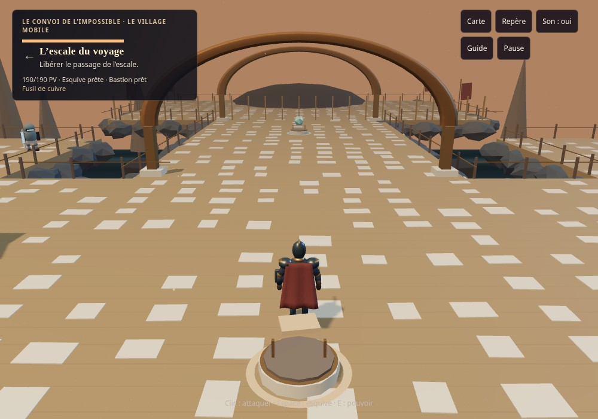
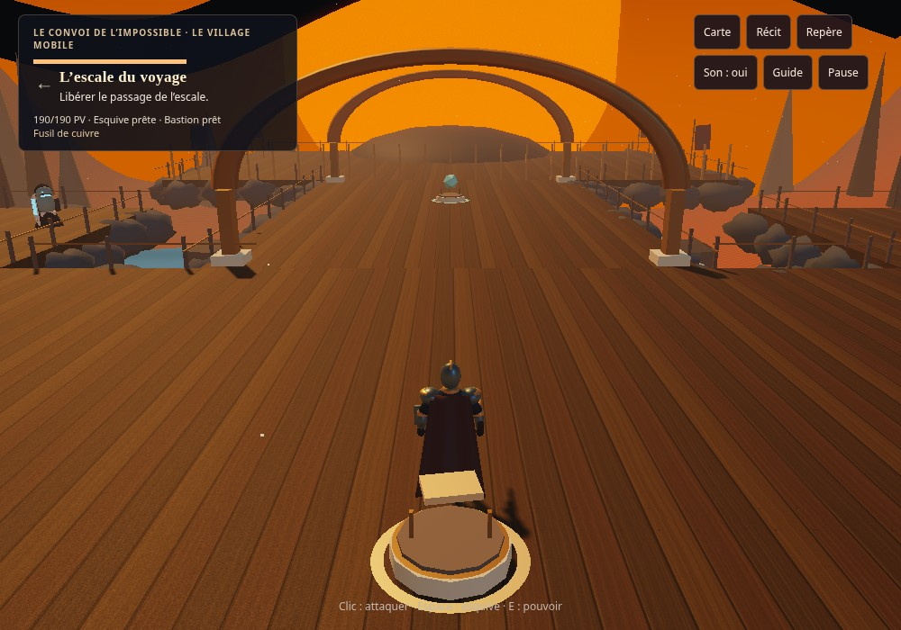
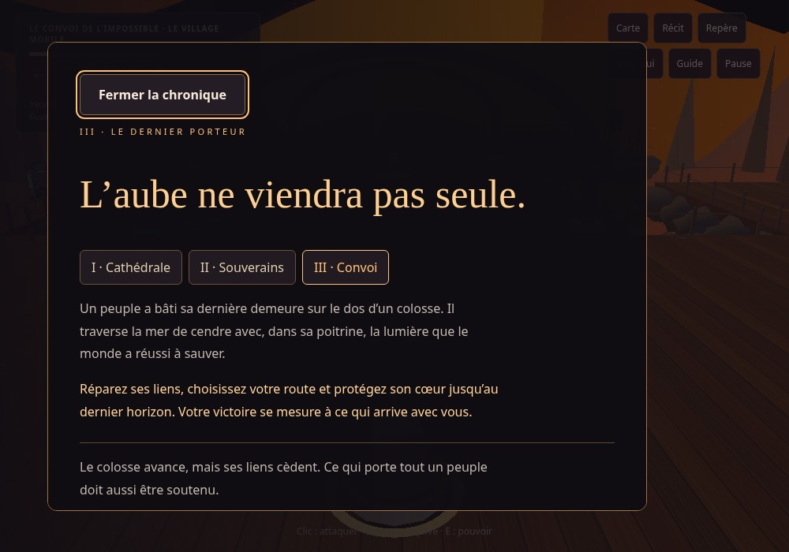

← JouerAmbre et obsidienne.
Captures du jeu 3D : version 1.0-rc1 face à la passe 1.1-rc2. Même héros, positions et caméra ; annonces temporaires masquées. Ce sont des images du moteur, pas des concepts illustrés.
La nouvelle direction privilégie les noirs, le soleil ambré, les matières et les silhouettes drapées. Les trois chapitres restent jouables. Le rendu est encore stylisé : il reste du travail sur les modèles et les animations pour atteindre la finesse des références.
La passe ajoute aussi une chronique accessible avec le bouton Récit et trois thèmes musicaux originaux qui évoluent en combat. Le son démarre après l’entrée dans le jeu.
I · La Cathédrale

Avant · 1.0-rc1
Après · 1.1-rc2II · La Chasse aux Souverains

Avant · 1.0-rc1
Après · 1.1-rc2III · Le Convoi de l’Impossible

Avant · 1.0-rc1
Après · 1.1-rc2Le récit dans le jeu

La chronique met le jeu en pause pendant la lecture.Qualité standard, Chromium sur PC. Ces captures ne mesurent pas la fluidité réelle d’un téléphone.